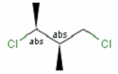
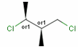
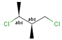
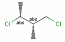
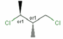
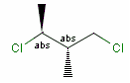
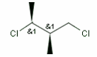
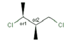
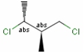

Relative configuration of tetrahedral stereo centers
In the case of stereogenic centers absolute and relative stereo
configurations are both supported. Both the MDL stereo representations
(chiral flag and enhanced stereo representation) and the
Daylight stereo representation are supported.
All molecules originating from Daylight SMILES represent
absolute stereo configuration, as SMILES does not support relative
configuration.
MDL Enhanced Stereo Representation
In MDL's enhanced stereo representation all stereo center atoms are labeled
with one of the following:
- ABS
- ORn
- ANDn
They define a grouping of the stereogenic centers.
Stereogenic centers belonging to ABS represent absolute
stereochemistry, i.e. chirality.
(All unlabeled stereo centers are also thought to belong to the
ABS group by default.)
Stereogenic centers belonging to an ORn group (e.g. OR1)
represents one stereoisomer that is either the structure as drawn (R, S)
OR the epimer in which the stereogenic centers have the opposite
configuration (S, R).
Stereogenic centers belonging to an ANDn group
(e.g. AND1) represents a mixture of two enantiomers:
the structure as drawn AND the epimer in which the stereogenic
centers have the opposite configuration. (e.g. racemic mixture.)
For example:
Molecule
|
Interpretation
|
|

|
A pure sample of one stereoisomer:
|
|

|
A pure sample of one of these enantiomers:
 or

|
|

|
A pure sample of one of these enantiomers:
or

|
|

|
A sample that is a mixture of the two enantiomers:
and

|
|

|
A pure sample of one of these diastereomers:
or
 or or
 or

|